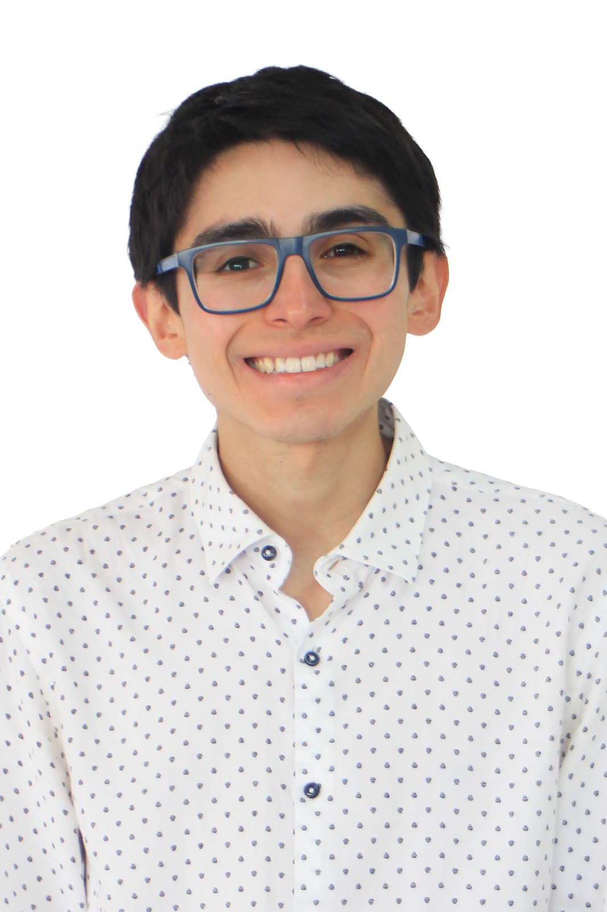

Hi, I'm
Industrial Electrical Engineer · Educator · Data & Education Project Coordinator
Using engineering, data, and education to expand opportunities in Chile's most vulnerable communities.

I'm an Industrial Electrical Engineer from the Pontifical Catholic University of Chile (GPA 6.40 — Rank 24/967) currently serving as a teacher with Enseña Chile and project coordinator at Khan Academy Chile.
Everything I do comes from a single purpose: supporting Chile's most vulnerable communities. I founded PSU Diego on YouTube to make quality education free and accessible, collaborated with multiple educational organizations, mentored three cohorts of engineering students, and applied my technical skills as a Risk Analysis Intern at the Central Bank of Chile.
I'm also a competitive long-distance runner — National Cross Country Champion in 2025 and university champion in 2022 and 2023. The discipline of athletics shapes everything else I do: consistency, resilience, and long-term commitment.
Designing and delivering educational content that reaches hundreds of students simultaneously, with a focus on equity.
Applying quantitative methods — from financial risk models to large-scale education datasets — to generate real insights.
Every project I take on is grounded in purpose: building a more equitable Chile through service and leadership.
Enseña Chile Foundation
2026 – 2027
Pontifical Catholic University of Chile
2020 – 2025
Selected among the top 6% of applicants. Teaching mathematics and technology in vulnerable school contexts as part of Chile's leading social leadership program.
Driving the systematic implementation of Khan Academy across Chilean schools, ensuring effective integration and sustainable educational impact at scale.
Founded a YouTube channel to create free educational materials for students preparing for Chile's Higher Education Entrance Exam, making quality content accessible regardless of socioeconomic background.
Designed and launched two new math courses (Equations & Geometry), expanding the curriculum from four to six units, each with 16 sessions and full exercise materials.
Leading the systematic rollout of Khan Academy across Chilean schools — designing integration frameworks, training educators, and measuring impact on student learning outcomes.
Free educational YouTube channel for students preparing for Chile's university admission exam. Created videos, exercises, and guides accessible to all students regardless of their school's resources.
Research analyzing SIMCE, Puntaje Nacional, and APTUS datasets — studying pandemic effects on learning, school coexistence, and student aspirations. Automated reporting from 4M+ test responses.
Designed full curriculum packages for multiple organizations (such as Puntaje Nacional or Conectado Aprendo): videos, exercises, manuals, and live tutoring materials. Six complete courses with 16 sessions each — reaching students across Chile.
Developed quantitative analysis for sovereign credit risk modeling. Applied state-space models to evaluate sovereign credit and liquidity exposures in a financial portfolio context.
Read publication →Contributed to research on corporate practices and human rights compliance in Chile, focusing on data compilation and analysis of corporate sustainability indicators.
Read publication →Chile · 2025
Puntaje Nacional · 2024
Puntaje Nacional · 2022
PUC · 2023
PUC · 2022
PUC · 2022
2025
2025
Top 6% of applicants · 2026
"Competitive running has shaped my approach to work: consistency, resilience, and long-term commitment."
As a National Cross Country Champion and multiple-time university champion, I've learned that meaningful results — in sport or in education — require showing up every single day with full commitment.
The same discipline that drives a 5 AM training run powers every class I prepare, every dataset I analyze, and every student I mentor.
I'm always open to collaborating on educational initiatives, research projects, talks, or anything that creates meaningful impact.